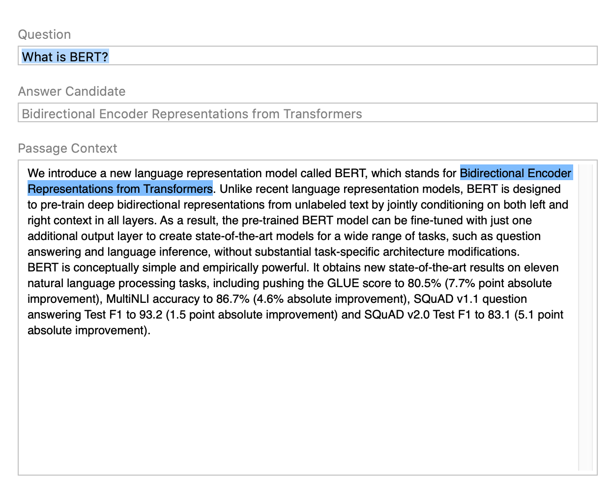

Converting TensorFlow 2 BERT Transformer Models#
The following examples demonstrate converting TensorFlow 2 models to Core ML using Core ML Tools.
Convert the DistilBERT Transformer Model#
The following example converts the DistilBERT model from Huggingface to Core ML.
Requirements
This example requires TensorFlow 2 and Transformers version 4.17.0.
Follow these steps:
Add the import statements:
import numpy as np import coremltools as ct import tensorflow as tf from transformers import DistilBertTokenizer, TFDistilBertForMaskedLM
Load the DistilBERT model and tokenizer. This example uses the
TFDistilBertForMaskedLMvariant:tokenizer = DistilBertTokenizer.from_pretrained('distilbert-base-cased') distilbert_model = TFDistilBertForMaskedLM.from_pretrained('distilbert-base-cased')
Describe and set the input layer, and then build the TensorFlow model (
tf_model):max_seq_length = 10 input_shape = (1, max_seq_length) #(batch_size, maximum_sequence_length) input_layer = tf.keras.layers.Input(shape=input_shape[1:], dtype=tf.int32, name='input') prediction_model = distilbert_model(input_layer) tf_model = tf.keras.models.Model(inputs=input_layer, outputs=prediction_model)
Convert the
tf_modelto an ML program (mlmodel):mlmodel = ct.convert(tf_model)
Create the input using
tokenizer:# Fill the input with zeros to adhere to input_shape input_values = np.zeros(input_shape) # Store the tokens from our sample sentence into the input input_values[0,:8] = np.array(tokenizer.encode("Hello, my dog is cute")).astype(np.int32)
Use
mlmodelfor prediction:mlmodel.predict({'input':input_values}) # 'input' is the name of our input layer from (3)
Convert the TF Hub BERT Transformer Model#
The following example converts the BERT model from TensorFlow Hub.
Requirements
This example requires TensorFlow 2, TensorFlow Hub, and Transformers version 4.17.0.
Follow these steps:
Add the import statements:
import numpy as np import tensorflow as tf import tensorflow_hub as tf_hub import coremltools as ct
Describe and set the input layer:
max_seq_length = 384 input_shape = (1, max_seq_length) input_words = tf.keras.layers.Input( shape=input_shape[1:], dtype=tf.int32, name='input_words') input_masks = tf.keras.layers.Input( shape=input_shape[1:], dtype=tf.int32, name='input_masks') segment_ids = tf.keras.layers.Input( shape=input_shape[1:], dtype=tf.int32, name='segment_ids')
Build the TensorFlow model (
tf_model):bert_layer = tf_hub.KerasLayer("https://tfhub.dev/tensorflow/bert_en_uncased_L-12_H-768_A-12/1", trainable=False) pooled_output, sequence_output = bert_layer( [input_words, input_masks, segment_ids]) tf_model = tf.keras.models.Model( inputs=[input_words, input_masks, segment_ids], outputs=[pooled_output, sequence_output])
Convert the
tf_modelto an ML program:mlmodel = ct.convert(tf_model, source='TensorFlow')
Define the
model.preview.typemetadata as"bertqa"so that you can preview the model in Xcode, and then save the model in anmlpackagefile:model.user_defined_metadata["com.apple.coreml.model.preview.type"] = "bertQA" model.save("BERT_with_preview_type.mlpackage")
To test the model, double-click the BERT_with_preview_type.mlpackage file in the Mac Finder to launch Xcode and open the model information pane, and then follow these steps:
Click the Preview tab.
Copy and paste sample text, such as the BERT QA model description, into the Passage Context field.
Enter a question in the Question field, such as What is BERT? The answer appears in the Answer Candidate field, and is also highlighted in the Passage Context field.
